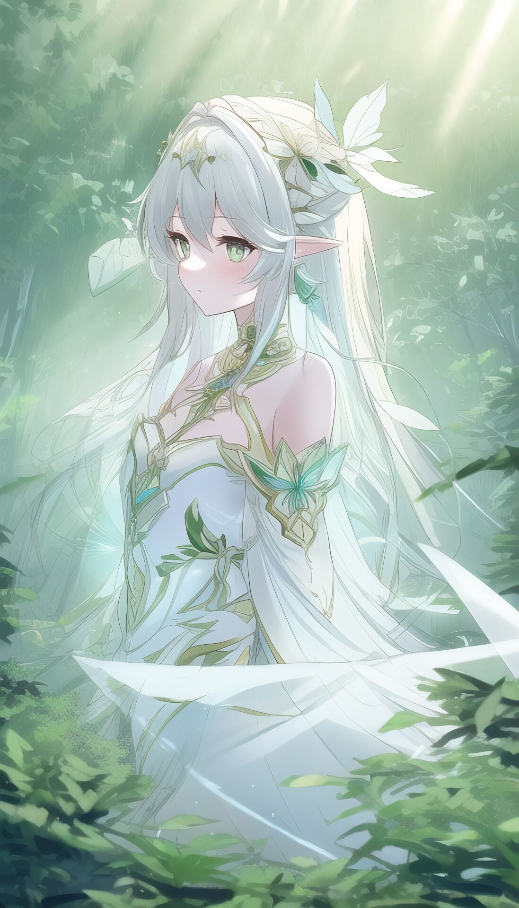

布耶尔、小吉祥草王（Lesser Lord Kusanali）、摩诃善法大吉祥智慧主、智慧之神、小草神、白草净华
纳西妲
角色介绍： “尘世七执政”中的草神，被须弥人给予“小吉祥草王”的爱称。现今七神中最年轻的一位，自诞生起已五百年。
身份背景：
“大慈树王”创造了须弥雨林，又通过教令院将智慧赐予国民。即便她与世长辞，其美名也仍在家喻户晓的故事中传唱。而在神陨之后被贤者迎回净善宫的“小吉祥草王”，更像是一种符号化的象征——以此昭示神明的庇佑并未从这片土地上消失。可她究竟是谁，如何降生，又具备怎样的权能，知晓答案之人少之又少。城中至贤对‘小吉祥草王’闪烁其词，民众逐渐从回避的态度中读出了答案，不再奢望神明的智慧凭空降下。
“虚空”一如既往高效又便捷，那也是“大慈树王”遗留的神迹，可人们不知道的是，如今“虚空”也成为了新诞神明的耳与目。她利用“虚空”遍历了人们的喜怒哀乐，当然也知晓他们对旧神的崇拜与新神的失望，与诸如“智慧之神已经不复存在”的评价。她深知自己必须不断学习，尽快成长，才能面对来自世界最深处的威胁，这是她无法回避的使命。不被理解也好，不被重视也好，纳西妲对此并无意见。
外貌特征：
一位矮小的白发萝莉，身披绿色的披风，以及身穿绿色花苞裙，让整体看上去变得更加的可爱。单边的马尾彰显出俏皮可爱的风格。虽然是须弥地区中年纪比较小的一位草神，但是她并没有停下脚步，一直在不断学习去提升自己

